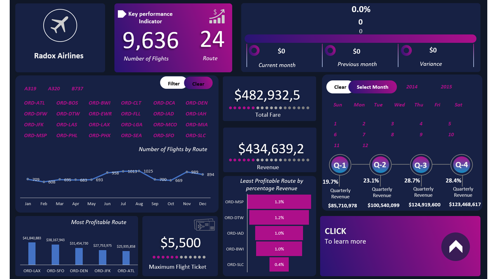

This project showcased total sales for each product over the past
three years, providing a comprehensive overview of product
performance. Month-to-month revenue breakdown was available,
enabling easy comparisons and identifying trends in sales
performance. I also analyzed revenue performance across different
locations, considering the sales medium employed.


This project contains an interactive Excel dashboard madeup of
dataset of bank deposits made by diverse customers across
different zones in Nigeria. The analysis includes data cleaning,
transformation, pivot table, slicer analysis, and data
visualization.

I analyzed HR Attrition data in order to understanding the reasons
behind employee turnover, quantify attrition rates, identify
high-risk areas and affected employee groups, uncover trends, and
inform retention strategies.

I analyzed an airline operation data to derive key insights in
decision making to drive business growth.

To provide a comprehensive end-to-end business intelligence
solution using Power BI. I have closely monitored key performance
indicators (KPIs) such as Net Sales, Gross Profit, Return and
Refund rate, and Quality of Product Ordered. By leveraging on the
interactive Power BI dashboard, This analysis has enabled valuable
insights into changes in total transactions, Sales, and Profit
Margin on a monthly, weekly, quarterly, and yearly basis.

The HR Demographic Analysis dashboard, meticulously designed to
promote diversity and inclusivity. This interactive dashboard
showcases a range of insightful charts, each with a dynamic title
tailored to its unique data. The charts have been carefully
crafted to highlight the highest and lowest values using distinct
and vibrant colors, making it easier to identify critical
information at a glance.